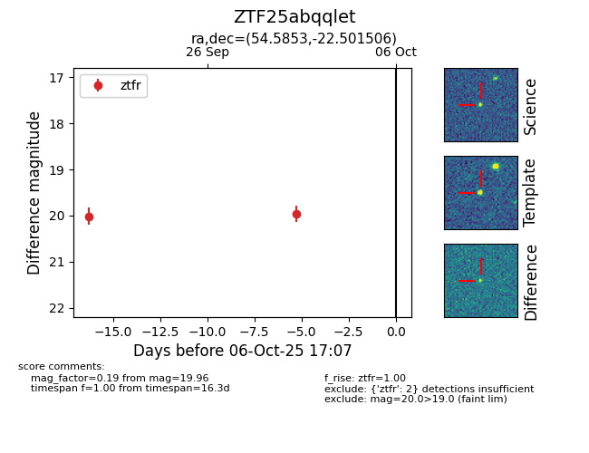

FINK: ZTF25abqqlet
Lasair: ZTF25abqqlet
ALeRCE: ZTF25abqqlet
ZTF25abqqlet (ztf,fink)
equatorial (ra, dec) = (54.5853,-22.50151)
galactic (l, b) = (215.3713,-52.01509)

last ztfr=19.96
2 ztfr detections